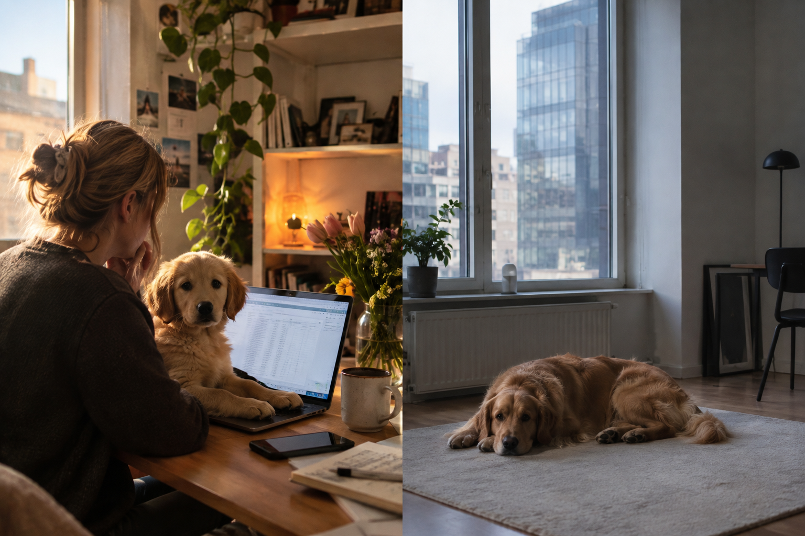

Den första frågan besvarades redan 2021, mitt i boomen. Den andra har nästan ingen ställt förrän nu, fyra år senare. Svaret på båda finns i myndigheternas egna siffror, det har bara aldrig lagts ihop.

2021 registrerades 78 052 nya hundar i Sverige, det högsta antalet Jordbruksverket någonsin mätt. Den siffran är väldokumenterad, den skrevs det om medan boomen pågick. Det som inte syns lika ofta är vad som hände efteråt: 2025 var antalet nya hundar nere på 56 801, det lägsta på åtta år, vad myndigheten själva kallar ett trendbrott.
Nyregistrerade hundar i Sverige, 2018 till 2025. Källa: Jordbruksverkets hundregister.
Så första halvan av svaret är enkel: rekordmånga skaffade hund, och sedan blev det stadigt färre igen. Den intressanta halvan är vad som hände med hundarna som redan fanns.
Ägarbytena, den närmaste offentliga siffran för omplacering, rör sig i motsatt rytm mot köpen. De fortsatte öka även efter att köpboomen redan vänt nedåt, och nådde sin egen topp först 2023, två år efter att flest hundar skaffades. En hund lämnas sällan bort som valp. Det händer när den blivit vuxen och vardagen förändrats igen, till exempel när matte eller husse plötsligt ska tillbaka till kontoret fem dagar i veckan.
Ägarbyten för hund per år. 2020 saknas i Jordbruksverkets data, 2022 är en uppskattning utifrån ett månadssnitt myndigheten själva angav.
Lägger man de två kurvorna bredvid varandra syns fördröjningen tydligt.
Skaffade jämfört med lämnade bort, indexerat mot 2019.
Ingen myndighet räknar i dag systematiskt hur många hundar som faktiskt lämnas bort eller omplaceras efter ett impulsköp. Ägarbyten är det närmaste offentliga måttet som finns, och säger ingenting om varför. Så den fulla bilden av vad som hände med pandemins hundar finns egentligen ingenstans samlad, förrän man lägger ihop den själv.
Bakom hela svängningen ligger sannolikt hemarbetet. Andelen som jobbade hemifrån minst halva veckan gick från cirka 6 procent 2019 till en uppskattad topp nära 24 procent under pandemin, enligt SCB, och har sedan sjunkit till omkring 13 procent 2024. Ungefär samma kurva som hundarna följer, fast några månader före.
Andel som arbetar hemifrån (vänster axel) mot antal nya hundar (höger axel).
Samma mönster går igen hos katt och häst, om man vet var man ska leta. Sökningar på kattungar dubblades under pandemins första månader, men Sverige saknade obligatorisk kattregistrering fram till 2023, så själva köpen syns aldrig i någon myndighetsstatistik.
Ökning i sökningar på Blocket, april till maj 2020 mot samma period 2019.
Hästpriserna steg 15 till 18 procent 2021, långt över det normala intervallet på 4 till 10 procent. Samma år importerades drygt 300 hästar från Island till Sverige, den högsta siffran på nästan tio år.
Prisökning på häst 2021, jämfört med det normala intervallet.
Mönstret upprepar sig oavsett djurslag och måttstock: köpsiffror för hund, sökintresse för katt, priser och import för häst. Alla pekar mot samma period, och alla vänder efter 2021 eller 2022, ungefär i takt med att hemarbetet också minskade. Det stärker bilden av att hemarbete och friare arbetsplats faktiskt drev fler att skaffa djur, och att notan för de besluten kom med några års fördröjning, långt efter att alla slutat prata om det.
Innehållsplan
Nerven: pandemin gav Sverige en våg av nya hundar. Alla skrev om boomen medan den pågick, 2021. Nästan ingen har frågat vad som hände med hundarna efteråt. Frågan ställs medvetet i två delar, hur många skaffade hund och vad hände med dem sen, så läsaren inte behöver redan känna till köpsiffrorna för att förstå vad artikeln handlar om.
Tre olika typer av källor, en för varje typ av tyngd i artikeln, kopplade till en specifik graf ovan. Kontaktades inte i praktiken inom ramen för denna skoluppgift, listas som research inför en verklig pitch.
Har forskat på hur hundar påverkas av att lämnas ensamma och på det känslomässiga bandet mellan hund och ägare. Medförfattare till en studie från 2026 om återkommande mönster hos hundar med separationsproblem.
Kopplas till: grafen som jämför hemarbete med hundköp, och grafen som visar fördröjningen mellan skaffade och lämnade bort.
Exempelfråga: Finns det stöd i forskningen för att hundar som vant sig vid ägaren hemma reagerar starkare när det förändras igen?
Har i flera år uttalat sig i media om ökat tryck efter pandemin och sitter på egen statistik över mottagna hundar.
Kopplas till: ägarbytesgrafen, för att bekräfta eller nyansera Jordbruksverkets siffror med verksamhetens egna observationer.
Exempelfråga: Märks det i era egna siffror att omplaceringarna toppade några år efter pandemins hundboom, inte under den?
Behöver inte ha lämnat bort sin hund, bara kunna berätta hur vardagen förändrades när hemarbetet minskade.
Kopplas till: hundgrafen över nyregistreringar, som en mänsklig röst bakom en av de 78 052.
Exempelfråga: Märkte du någon skillnad i hundens beteende när du gick tillbaka till kontoret?
Inte för att pitcha direkt, det vill journalister uttryckligen inte: bara 4 procent vill bli kontaktade via sociala medier, och 19 procent blockerar en kommunikatör som hör av sig oombett där. 97 procent vill ha kontakt via mejl.
Anledningen att ändå publicera är att sociala medier är där journalister redan research:ar. 83 procent använder sociala medier för att hämta information, och 59 procent specifikt för att hitta experter eller intervjupersoner, vilket direkt motiverar intervjupersonerna ovan.
Socialt inlägg (LinkedIn / Instagram)
Bildkort (delbar grafik, samma mörka palett som denna sida): "78 052 skaffade hund 2021" som kicker, "Vad hände sen?" som huvudrubrik, med källhänvisning längst ner. Tänkt att fungera fristående i ett flöde, omslag när länken delas vidare.